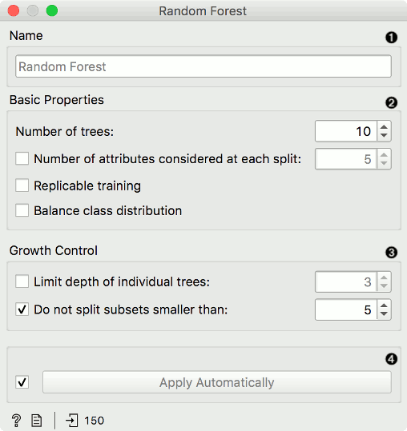
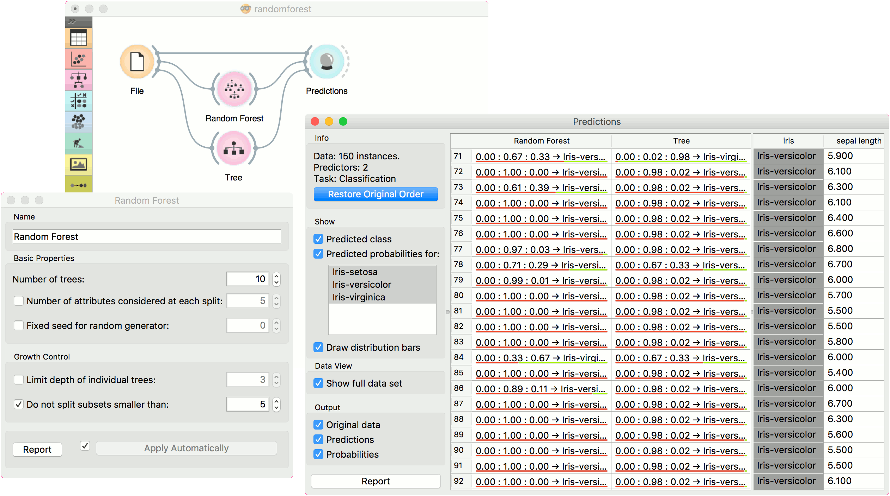
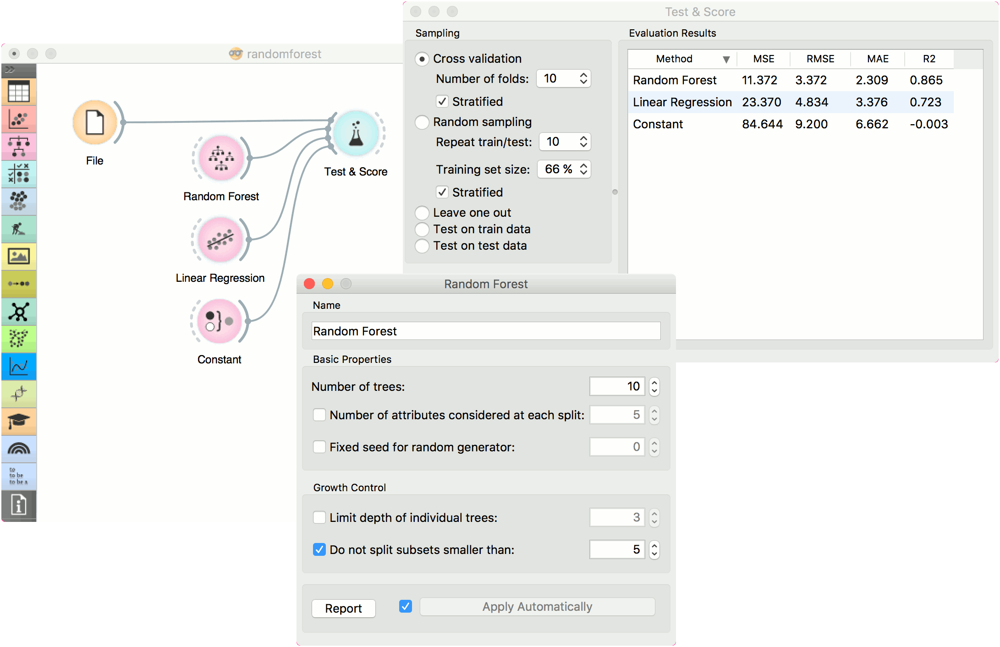

Random Forest
Predict using an ensemble of decision trees.
Inputs
- Data: input dataset
- Preprocessor: preprocessing method(s)
Outputs
- Learner: random forest learning algorithm
- Model: trained model
Random forest is an ensemble learning method used for classification, regression and other tasks. It was first proposed by Tin Kam Ho and further developed by Leo Breiman (Breiman, 2001) and Adele Cutler.
Random Forest builds a set of decision trees. Each tree is developed from a bootstrap sample from the training data. When developing individual trees, an arbitrary subset of attributes is drawn (hence the term “Random”), from which the best attribute for the split is selected. The final model is based on the majority vote from individually developed trees in the forest.
Random Forest works for both classification and regression tasks.

- Specify the name of the model. The default name is “Random Forest”.
- Basic properties:
- Number of trees: Specify how many decision trees will be included in the forest.
- Number of trees considered at each split: Specify how many attributes will be arbitrarily drawn for consideration at each node. If the latter is not specified (option Number of attributes… left unchecked), this number is equal to the square root of the number of attributes in the data.
- Replicable training: Fix the seed for tree generation, which enables replicability of the results.
- Balance class distribution: Weigh classes inversely proportional to their frequencies.
- Growth control:
- Limit depth of individual trees: Original Breiman’s proposal is to grow the trees without any pre-pruning, but since pre-pruning often works quite well and is faster, the user can set the depth to which the trees will be grown.
- Do not split subsets smaller than: Select the smallest subset that can be split.
- Click Apply to communicate the changes to other widgets. Alternatively, tick the box on the left side of the Apply button and changes will be communicated automatically.
Preprocessing
Random Forest uses default preprocessing when no other preprocessors are given. It executes them in the following order:
- removes instances with unknown target values
- continuizes categorical variables (with one-hot-encoding)
- removes empty columns
- imputes missing values with mean values
To remove default preprocessing, connect an empty Preprocess widget to the learner.
Feature Scoring
Random Forest can be used with Rank for feature scoring. See Learners as Scorers for an example.
Examples
For classification tasks, we use iris dataset. Connect it to Predictions. Then, connect File to Random Forest and Tree and connect them further to Predictions. Finally, observe the predictions for the two models.

For regressions tasks, we will use housing data. Here, we will compare different models, namely Random Forest, Linear Regression and Constant, in the Test & Score widget.

References
Breiman, L. (2001). Random Forests. In Machine Learning, 45(1), 5-32. Available here.